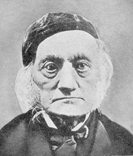

Les précurseurs et les influences de Darwin
4. Sélection naturelle
par John Wilkins
Précédent |
Table des matières |
Suivant |
Des théories non dissimilaires à la sélection naturelle existent depuis un certain temps. Voici, grâce à Cosma Shalizi, la version d'Aristote, fondée sur la vision plus ancienne d'Empédocle :
Une difficulté se présente : pourquoi la nature ne devrait-elle pas agir, non pas dans un but, ni parce que c'est ainsi que les choses sont meilleures, mais simplement comme le ciel pleut, non pas pour faire pousser le blé, mais par nécessité ? Ce qui s'élève doit se refroidir, et ce qui s'est refroidi doit devenir de l'eau et descendre, le résultat de ceci étant que le blé pousse. De même, si la récolte d'un homme est gâtée sur le battoir, la pluie n'est pas tombée dans ce but – afin que la récolte fût gâtée – mais ce résultat a simplement suivi. Pourquoi donc ne devrait-il pas en être de même pour les parties de la nature, par exemple que nos dents doivent apparaître par nécessité – les dents incisives tranchantes, adaptées pour déchirer, les molaires larges et utiles pour broyer la nourriture – puisque elles ne sont pas apparues pour cet objet, mais que c'était simplement un résultat concomitant ; et ainsi de toutes les autres parties dans lesquelles nous supposons qu'il y a un but ? Partout donc où toutes les parties sont apparues exactement telles qu'elles auraient été si elles avaient été faites pour un but, de telles choses ont survécu, étant organisées spontanément d'une manière appropriée ; tandis que celles qui se sont développées autrement ont péri et continuent de périr, comme Empédocle dit que ses « progénitures de taureaux à visage humain » l'ont fait.1
La vision précédente d'Empédocle était que des parties aléatoires des animaux s'associeraient au début et que ces assemblages qui réussiraient survivraient, tandis que les autres périraient et ne se reproduiraient pas. Une fois ainsi générés, cependant, Empédocle ne s'attendait pas à une évolution ultérieure. Dennett observe que Hume avait une flirtation similaire avec quelque chose de semblable à la sélection naturelle. Cependant, aucun de ces commentaires jetables n'a été développé, et dans le cas d'Aristote, ils ont finalement été ignorés au profit de ses vues plus générales sur la finalité.
Dans le « Croquis historique », Darwin admit que lui et Richard Owen, qui revendiquait la priorité après la publication de L'Origine (comme il était de son habitude2), avaient été devancés par deux auteurs, Patrick Matthew en 1831 et William Charles Wells en 1813, publié en 18183. Darwin n'avait lu aucun des deux, car les vues de Wells s'appliquaient uniquement aux races humaines, et celles de Matthew étaient présentées dans une annexe d'un ouvrage sur le bois de marine. Aucun des deux auteurs n'a développé davantage ses vues, et Darwin mérite clairement crédit pour l'applicabilité globale de la sélection en tant que mécanisme d'évolution. Darwin a développé son mécanisme à partir d'une analogie avec les processus de sélection par les éleveurs pour des traits qu'ils jugeaient désirables, et l'a lié à ce qu'il avait lu chez Malthus de sorte que « cela me frappa aussitôt que dans ces circonstances, les variations favorables tendraient à être conservées, et les défavorables à être détruites. Le résultat de ceci serait la formation de nouvelles espèces. Voici donc, enfin, une théorie par laquelle travailler ... »4. Bien que Matthew fût un évolutionniste de la variété radicale sociale, il ne présenta pas la sélection comme un mécanisme d'évolution.
Edward Blyth avait également publié une théorie de la sélection naturelle en 1837, mais il s'est opposé à la transmutation des espèces car, selon lui, si elle se produisait, elle détruirait l'intégrité des espèces : « nous chercherions en vain ces distinctions constantes et invariables qui se trouvent exister »5. Comme le dit de Beer, il est peu probable que Darwin lui ait été redevable si ses opinions étaient si opposées à celles de Darwin6. Darwin avait lu Blyth, mais seulement après sa propre formulation, et Blyth est devenu plus tard un correspondant précieux et constant de Darwin. S'il pensait que Darwin avait, comme l'a affirmé Eiseley, plagié la sélection naturelle auprès de lui, il ne serait pas devenu un ami et un soutien si fort de l'évolution darwinienne. Intéressamment, Blyth était l'un des auteurs que Darwin a mentionnés à Wallace lors de sa réponse à son article de 1855.
D'autres candidats incluent Prichard, Lawrence et Naudin, mais leurs déclarations sont vagues et peu développées7.

Richard Owen (à droite) en tant que vieil hommeCertains historiens pensent qu'Owen a tenté de réclamer la priorité pour la sélection naturelle, mais il était clair qu'il n'était jamais entièrement satisfait de l'évolution. Cependant, s'il n'avait pas été aussi difficile homme qu'il l'était (bien qu'il possédât de nombreuses vertus et qu'il ait souffert du révisionnisme de la tradition darwinienne), il aurait pu devenir un partisan de Darwin, car les fondements de ses vues n'étaient pas si différents de ceux de Darwin8. Néanmoins, il n'existe aucune preuve réelle qu'il ait de quelque manière que ce soit donné l'idée à Darwin. Richards (1992) pense qu'Owen avait été rabroué dans ses jeunes vues transmutationnistes par le géologue Sedgwick et les leaders religieux orthodoxes en 1837, et qu'il avait alors arboré ses couleurs orthodoxes. Dans une critique de sa propre réponse à l'Origin, un critique anonyme a noté que « tant que nous pouvons en déduire de sa communication, il nie la doctrine darwinienne, admet la justesse de ses fondements, et prétend être le premier à souligner la vérité du principe sur lequel elle est fondée »9. Owen peut avoir quelque raison de son côté, mais les preuves sont ambiguës, et il n'y a aucun signe de son influence directe sur Darwin concernant la sélection naturelle, alors ou plus tard.
Une affirmation plus sérieuse d'avoir influencé Darwin peut être faite pour l'économiste écossais Adam Smith, dans son ouvrage La Richesse des Nations de 1776. Il existe une analogie claire entre la survie de la corporation grâce à un commerce réussi et la survie d'une lignée héréditaire grâce à des traits avantageux. Il est connu que Darwin a lu Smith et ces commentateurs politiques et sociaux qui l'ont suivi, et il serait surprenant que ces idées ne se soient pas implantées dans ses pensées. Cependant, les mondes biologique, social et moral étaient considérés à cette époque comme complètement séparés. Rappelez-vous, c'était une époque où même l'existence d'un réflexe involontaire était considérée comme impensable : la biologie ne pouvait tout simplement pas surmonter la volonté consciente (par exemple, Marshall Hall en 1832 n'a pas pu publier ses études sur les réflexes dans les comptes rendus de la Royal Society10). Les vues de Malthus, par exemple, étaient basées sur l'hypothèse que les pauvres manquaient simplement de fibre morale et de force de volonté. L'extension de ce schéma d'explication au monde biologique a été un saut majeur de l'imagination.
Smith pensait qu'il y avait un effet de « main invisible » qu'un marché libre créait, garantissant que les entités commerciales et les fabricants efficaces prospéraient purement en raison de la poursuite de l'intérêt personnel. Il caractérisait le marché en termes de division du travail, et l'équilibre résultant ne devait à aucune planification ou intention de la part des corporations ou agents individuels de maximiser le bien commun ; c'était un résultat non conçu. Les vues de Smith, via Malthus, ont été appliquées par David Ricardo aux lois britanniques sur le blé à partir de 1815, et elles ont également influencé John Stuart Mill. L'idée d'un mécanisme déterminant l'effet moyen des activités des populations et de leur survie et propagation a peut-être influencé le désir de Darwin de trouver un mécanisme non basé sur le dessein pour expliquer le changement organique, et a peut-être suggéré une manière de le faire11. Cependant, les vues de Ricardo et de Malthus tendaient à faire une vertu de ces nécessités, ce que le mécanisme de sélection naturelle de Darwin ne fit pas, malgré l'interprétation des « darwiniens sociaux » mal nommés plus tard dans ce siècle.
La terminologie de Darwin pour la sélection naturelle était basée sur une analogie avec les pratiques d'élevage de l'élevage animal, la sélection artificielle. Wallace, dont la vision ne dérivait pas d'une analogie similaire, était mal à l'aise avec les implications volontaristes du terme et a proposé à la place l'expression de Spencer « survie du plus apte », que Spencer avait développée d'une manière purement philosophique. Darwin a plus tard regretté ce choix, mais il l'a adopté dans les éditions ultérieures de Origin. Cependant, il a écrit qu'il s'agissait d'un usage métaphorique similaire à ces expressions que les astronomes utilisent pour décrire Dieu maintenant les choses sur leur orbite et d'aucune importance directe, mais qu'il aurait souhaité utiliser le terme « préservation naturelle » pour éviter la confusion12.
En résumé, bien qu'il y ait eu des précurseurs, il peut être raisonnablement conclu que Darwin n'a ni plagié ni été directement influencé par quiconque avait proposé la sélection naturelle comme explication de l'adaptation chez les organismes vivants. La découverte de Wallace fut véritablement indépendante, bien qu'elle repose sur de nombreuses des mêmes influences, et il mérite le titre de co-découvreur, bien qu'au cours du reste de sa vie, il ait joyeusement accordé la priorité et le crédit à Darwin, même après le décès de ce dernier.
1Aristote, Physique, Livre II, 8, paragraphe 2, selon la traduction en ligne de R. P. Hardie et R. K. Gaye, détails de publication non fournis. Voir Magner 1989 pour une discussion complète sur les précurseurs grecs.
2 de Beer 1963, p 165
3 Mayr 1982, pp 498-500
4 Darwin 1959, p 120
5 de Beer 1963, p 102
6 L'argument selon lequel Darwin aurait emprunté à Blyth sur la base d'une similitude de terminologie a été réfuté, sur la base que Darwin avait utilisé le terme avant de pouvoir lire Blyth, et parce que Darwin avait clairement développé certains des piliers centraux de sa théorie à ce stade, des observations faites en réplique par Beddall 1972 et 1973 et Schwartz 1974 à l'encontre des affirmations d'Eiseley 4 à 6 ans avant que ses exécuteurs littéraires ne rééditent ses premiers essais. Voir également Ospovat. La vision d'Eiseley est reproduite sur le web sur ce site. Gould dit quelque chose à ce sujet qui mérite d'être répété, et je suis redevable à un répondant nommé Seth Jackson pour avoir attiré mon attention dessus :
"Le genre d'incident suivant s'est produit à maintes reprises, depuis Darwin. Un évolutionniste, feuilletant un ouvrage pré-darwinien d'histoire naturelle, tombe sur une description de la sélection naturelle. Aha, dit-il ; j'ai trouvé quelque chose d'important, une preuve que Darwin n'était pas original. Peut-être ai-je même découvert une source de vol direct et malveillant de la part de Darwin ! Dans l'un des plus notoires de ces affirmations, le grand anthropologue et écrivain Loren Eiseley pensait avoir détecté une telle anticipation dans les écrits d'Edward Blyth. Eiseley a laborieusement examiné les preuves que Darwin avait lues (et utilisées) dans l'œuvre de Blyth et, commettant une erreur étymologique cruciale en cours de route (Gould, 1987c), a finalement accusé Darwin d'avoir volé l'idée centrale de sa théorie à Blyth. Il a publié son cas dans un long article (Eiseley, 1959), plus tard élargi par ses exécuteurs testamentaires en un volume posthume intitulé "Darwin et le mystérieux M. X" (1979)."
Oui, Blyth avait discuté de la sélection naturelle, mais Eiseley ne s'en est pas rendu compte – commettant ainsi l'erreur habituelle et fatale dans cette ligne d'argumentation commune – que tous les bons biologistes l'avaient fait dans les générations précédant Darwin. La sélection naturelle figurait comme un élément standard dans le discours biologique – mais avec une différence cruciale par rapport à la version de Darwin : l'interprétation habituelle invoquait la sélection naturelle dans le cadre d'un argument plus large en faveur de la permanence créée. La sélection naturelle, dans cette formulation négative, agissait uniquement pour préserver le type, constant et inviolable, en éliminant les variants extrêmes et les individus inadaptés qui menaçaient de dégrader l'essence de la forme créée. Paley lui-même présente la variante suivante de cet argument, le faisant pour réfuter (sur les pages ultérieures) une affirmation selon laquelle les espèces modernes préservent les bons designs triés d'un éventail beaucoup plus large de créations initiales après que la sélection naturelle eut éliminé les formes moins viables : "L'hypothèse enseigne que toute variété possible d'être a, à un moment ou à un autre, trouvé son chemin vers l'existence (par quelle cause et de quelle manière n'est pas dit), et que celles qui étaient mal formées, sont mortes" (Paley, 1803, pp. 70-71).
La théorie de Darwin ne peut donc pas être assimilée à la simple affirmation que la sélection naturelle opère. Presque tous ses collègues et prédécesseurs ont accepté ce postulat. Darwin, de sa manière caractéristique et radicale, a compris que ce mécanisme standard pour préserver le type pouvait être inversé, puis converti en la cause principale du changement évolutif. La sélection naturelle se trouve évidemment au centre de la théorie de Darwin, mais nous devons reconnaître, comme son deuxième postulat clé, l'affirmation selon laquelle la sélection naturelle agit comme la force créatrice du changement évolutif. L'essence du darwinisme ne peut résider dans la simple observation que la sélection naturelle opère – car tout le monde avait depuis longtemps accepté un rôle négatif pour la sélection naturelle dans l'élimination des inadaptés et la préservation du type."
Gould, S. (2002). The Structure of Evolutionary Theory. Cambridge, Massachusetts : The Belknap Press of Harvard University Press. Page 137. La référence Gould 1987c renvoie à An Urchin in the Storm, mais aucune référence de page n'est donnée.
7 Mayr 1982, p 500. Les affirmations faites au nom de J. C. Pritchard ont été formulées par E. B. Poulton dans son Essais sur l'évolution, chap. vi, et il présente également Wollaston dans son Sur la variation des espèces (1856), et Godron, De L'Espèce et des Races dans les Êtres Organisés (1859). Cité dans Simpson 1925, 173n.
8 Desmond 1985, Desmond et Moore 1991
9 London Review cité dans de Beer 1963, p 165
10 Cf Desmond 1987
11 cf. Desmond et Moore 1991, chapitre 18
Précédent |
Table des matières |
Suivant |
| Les FAQ | Fichiers à lire absolument | Index | Créationnisme | Évolution | Âge de la Terre | Géologie du déluge | Catastrophisme | Débats |